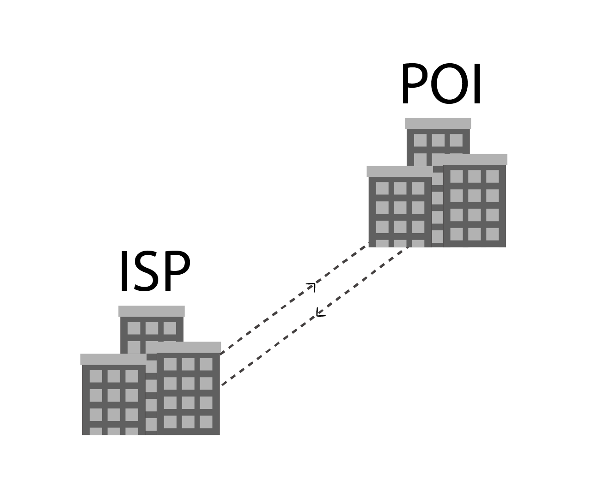

Internet Service Providers
Internet Service Providers/ broadband providers have many regional data centres that filters the data and decides where it can get the information you need and send the request to a point of interconnect (POI).
Click here for a view of the map of data centres and buildings for the Wellington Internet Exchange.
Public Infrastructures Next